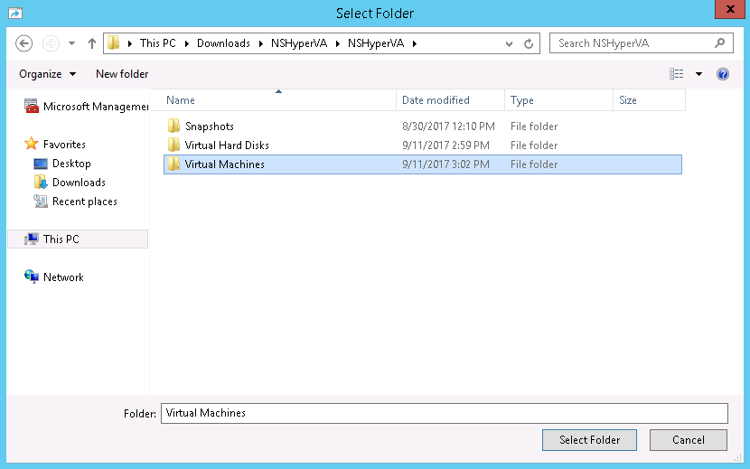
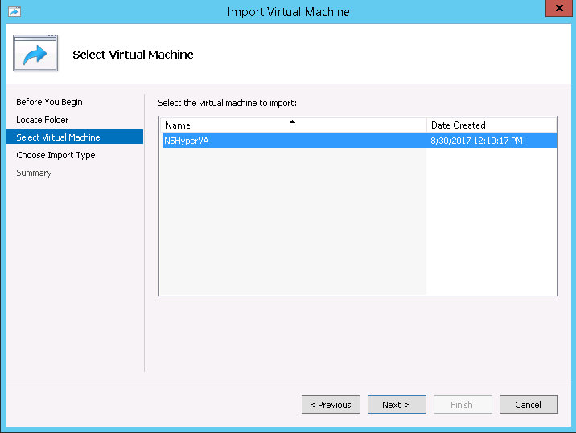

Install the Virtual Appliance on Microsoft Hyper-V
Support for Microsoft Hyper-V VM has only been validated on Windows 10. Before starting this procedure, download the Netskope Hyper-V VM zip file from the Netskope UI (Settings > Security Cloud Platform > On-Premises Infrastructure). Also, you'll need an ssh shell to install Hyper-V on a server. The following are the system requirements:
32 GB RAM
297 GB of HDD
8 cores
To install the Microsoft Hyper-V Virtual Machine (VM):
If you do not yet have Hyper-V installed on a server, go to Install Hyper-V on Windows 10 and complete the instructions.
Unzip the NSHyperVA.zip file on the Hyper-V server.
Go to the Hyper-V Manager UI and select Action > Import Virtual Machine.

Click Next in the Import Virtual Machine wizard, and then click Browse to go the folder where your unzipped NSHyperVA file is located. Select the Virtual Machine folder inside the root folder that you unzipped in step 2, and click Select Folder, and then click Next.
 Select the VM to import, and then click Next.
 Select Copy the virtual machine (create a new unique ID) and click Next.

Choose to store the configuration in the default location, or choose a new location, and then click Next.
Choose where store the imported hard disks. To store them next to the Virtual Machine folder, click Browse to go the folder where your unzipped NSHyperVA file is located, select the Virtual Hard Disks folder, click Select Folder, and then click Next.

Click Finish.
The appliance is configured to use DHCP on the default dp2 interface. Depending on your use case, you can choose to configure a static IP on dp2 and configure additional interfaces. For more information, see Configure the Interfaces.